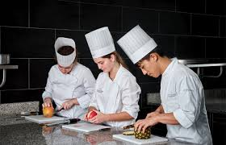
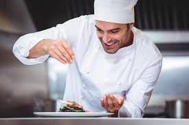

Om Oss
Vi är en passionerad grupp av matälskare som delar samma kärlek för mat och innovation. Vår resa började med en dröm om att skapa en plats där människor kan samlas och njuta av fantastiska måltider i en inspirerande miljö. Med en kombination av erfarenhet, kreativitet och engagemang strävar vi efter att erbjuda en unik matupplevelse som överträffar förväntningarna. Vårt team består av skickliga kockar, dedikerade servitörer och passionerade matentusiaster som alla arbetar tillsammans för att skapa en minnesvärd upplevelse för våra gäster. Vi tror på att använda färska, lokala ingredienser och att ständigt utforska nya smaker och tekniker för att hålla vår meny spännande och innovativ. Välkommen till vår värld av smak och kreativitet!

Vår Vision
Vår vision är att skapa en unik matupplevelse som kombinerar traditionella smaker med moderna influenser, allt i en välkomnande och inspirerande miljö. Vi strävar efter att vara en ledande aktör inom restaurangbranschen genom att erbjuda innovativa rätter, enastående service och en atmosfär som får våra gäster att känna sig som hemma. Genom att använda färska, lokala ingredienser och ständigt utforska nya smaker och tekniker vill vi skapa en meny som överraskar och glädjer våra gäster. Vår vision är att bli en destination där människor samlas för att njuta av fantastisk mat, dela minnen och skapa nya traditioner tillsammans.